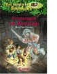

Jack and Annie are on their second mission to find—and inspire—artists to bring happiness to millions. After traveling to New Orleans, Jack and Annie come head to head with some real ghosts, as well as discover the world of jazz when they meet a young Louis Armstrong!